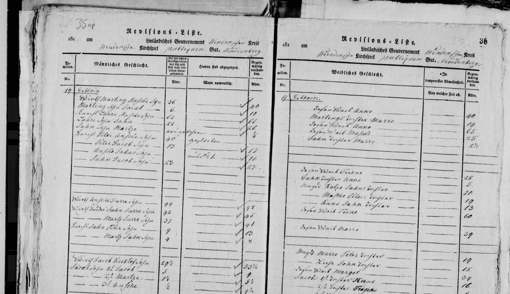

Pēteris Ģibols 1765–1811
Peter's 4× great-grandfather.
Pēteris Ģibols was born about 1765 in Priekuļi, Cēsis district, Vidzeme, Latvia2, the son of Ansis Ģibols2,6. He died between 1811 and 1816 in Priekuļi, Cēsis district, Vidzeme, Latvia6.
Family
- Parents
- Ansis Ģibols 1742–1805 documented
- Partner
- unnamed wife of Pēteris Ģibols
- Children
- Jānis Ģibols b. 1803 possible
- Mārcis Gibboy b. 1807 documented
Life events
| Event | Date | Place and details |
|---|---|---|
| Born | abt 1765 | Priekuļi, Cēsis district, Vidzeme, Latvia Preferred version: In the 1811 and 1816 Priekuļi soul revisions (LVVA f. 199, apr. 1, l. 112, images 9 & 41), Mārcis Ģibols's father Pēteris ('Peter | 30 -> 46; deßen Sohn Martz | 5' in 1811; 'Knecht Peter Ansche Sohn | 46 | gestorben' in 1816) was age 30 in 1795 and 46 in 1811 (born c. 1765); Raimonds Voroņins's tree has 1773 from confusing him with Juris's 4th son '4, Peter | 23 [in 1795] | in No 5'.2 |
| Born | 1773 | According to an online family tree3 |
| Died | bet 1811 and 1816 | Priekuļi, Cēsis district, Vidzeme, Latvia Preferred version: In the 1816 Priekuļi soul revision (LVVA f. 199, apr. 1, l. 112, image 41, No. 19 Gibbain), 'Knecht Peter Ansche Sohn | 46 | gestorben' died between 1811 and 1816, while his 9-year-old orphaned son 'Knecht Martz Peters Sohn' was at No. 21 Schwigur; Raimonds Voroņins's tree has 1821 without a primary citation.6 |
| Lived | Aug 1811 | Priekuļi, Cēsis district, Vidzeme, Latvia2,4 |
| Died | 1821 | According to an online family tree7 |
| Lived | 1826 | Podiņi farm, Priekuļi, Cēsis district, Vidzeme, Latvia According to an online family tree5 |
Records


Sources
- MyHeritage family tree 'Dzimta' of Peter's third cousin (his family site), member GEDCOM export of 26 Oct 2026, I500946 (person-6500946), GEDCOM lines 24579–24593.
NAME Pēteris /Ģibols/
- Priekuļi (Freudenberg) soul revision 1811, No. 6 Gibboy Gesinde, LVVA f. 199, apr. 1, l. 112, image 9 (p. 3v), LVVA f. 199, apr. 1, l. 112, image 9.
No 6 Gibboy Gesinde / Ansche 1ster Wirth | 53 | gestorben im Jahr 1805 | — / deßen Söhne 1, Martz Wirth | 20 | — | 36 / ... / Laur | 46 | — | 62 / deßen Sohn Jahn | 6 | — | 22 / Peter | 30 | — | 46 / deßen Sohn Martz | — | nachher gebohren | 5
Translation: No. 6 Gibboy farm: Ansche, 1st farmer, 53 [in 1795], died in 1805; his sons: 1. Martz, farmer, 20 -> 36 ... Laur, 46 -> 62; his son Jahn, 6 -> 22; Peter, 30 [in 1795] -> 46 [in 1811]; his son Martz, born since, 5 [in 1811].
Priekuļi (Freudenberg) 6th soul revision (1811, LVVA f. 199, apr. 1, l. 112, image 9, p. 3a), No. 6 Gibboij Gesinde: 'Peter | 30 [in 1795] | — | 46 [in 1811]', father of 'deßen Sohn Martz | nachher gebohren | 5' (born c. 1765).
- MyHeritage family tree 'Dzimta' of Peter's third cousin (his family site), member GEDCOM export of 26 Oct 2026, I500946 (person-6500946), GEDCOM lines 24579–24593.
BIRT · 1773
- Priekuļi soul revision — Farm XVI Podiņi (transferred from Farm XXI Žvīguri).
Dzīvo Podiņu mājās Nr. 16 1826.gadā … 1826.gadā Mārcis (19) ar sievu Mariju (35) dzīvo 16 Podiņu mājās, Priekuļos, atnācis no XXI Žvīguru mājām (iepriekšējā Dvēseļu revīzijā).
Lived with his family at Farm XXI Žvīguri ('XXI Žvīguru mājām', on the Priekuļi / Freudenberg estate) in the 1811 soul revision before moving to Farm XVI (16) Podiņi by the 1816 soul revision.
- MyHeritage family tree 'Dzimta' of Peter's third cousin (his family site), member GEDCOM export of 26 Oct 2026, I500946 (person-6500946), GEDCOM lines 24579–24593.
Dzīvo Podiņu mājās Nr. 16 1826.gadā
His note: 1826 soul revision of Priekuļi, http://lvva-raduraksti.lv/lv/menu/lv/13/ig/14/ie/5962/book/32503.html, entry 69. (His tree also has him dying in 1821.)
- Priekuļi (Freudenberg) soul revision 1816, No. 19 Gibbain, LVVA f. 199, apr. 1, l. 112, image 41 (ff. 35v–36r), LVVA f. 199, apr. 1, l. 112, image 41.
No 19 Gibbain / Wirth Marting Ansche Sohn | 36 | — | 40 / Marteng Sohn Jacob | 6 | — | 10 / Knecht Laure Ansche Sohn | 62 | — | 66 / Laure Sohn Jahn | 22 | — | 26 / Jahn Sohn Martze | neugebohren | ¼ / Knecht Peter Ansche Sohn | 46 | gestorben | —
Translation: No. 19 Gibbain [Ģiboli]: Farmer Marting, Ansche's son, 36 -> 40; Marting's son Jacob, 6 -> 10; farmhand Laure, Ansche's son, 62 -> 66; Laure's son Jahn, 22 -> 26; Jahn's son Martze, newborn, ¼; farmhand Peter, Ansche's son, 46 [in 1811], died.
Priekuļi (Freudenberg) 7th soul revision (1816, LVVA f. 199, apr. 1, l. 112, image 41, ff. 35v–36r), farm No. 19 Gibbain (renumbered from No. 6 Gibboy in 1811): following farmer Marting Ansche Sohn (36 -> 40) and farmhand Laure Ansche Sohn (62 -> 66) is 'Knecht Peter Ansche Sohn', age 46 at the 1811 revision, now recorded as 'gestorben' (died between 1811 and 1816). This gives Pēteris's patronymic — Ansche Sohn (son of Ansis, like Laure Ansche Sohn b. c. 1749 and 1st farmer Ansche b. c. 1742) — and explains why his orphaned 9-year-old son Martz Peters Sohn (age 5 in 1811) appears two farms over at No. 21 Schwigur in 1816.
- MyHeritage family tree 'Dzimta' of Peter's third cousin (his family site), member GEDCOM export of 26 Oct 2026, I500946 (person-6500946), GEDCOM lines 24579–24593.
DEAT · 1821 · AGE 47-48